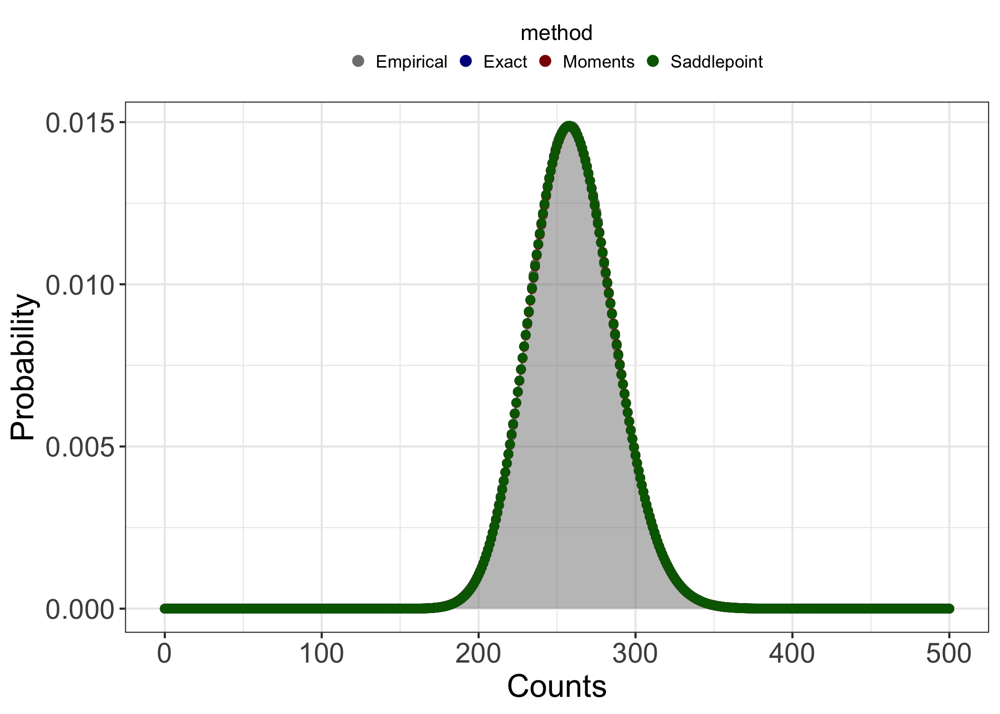

nbconv
Introduction
The negative binomial (NB) distribution is widely used to model count
data whose variance is greater than expected given other discrete
probability distributions. The ability to account for overdispersion in
observed data using the NB distribution has led to its application
across a wide range scientific disciplines as an alternative to Poisson
models. Recently, I was interested in evaluating the sum of independent
but not identically distributed negative binomial random variables
(r.v.s). I discovered relatively quickly, however, that a
straightforward solution to this problem doesn’t really exist. The exact
solutions that have been published by
Furman
and Vellaisamy both have
significant computational drawbacks. Approximate methods have also been
described
for such sums, which largely alleviate the computational burdens of the
exact methods, but at the potential cost of numeric accuracy. What
really befuddled me, however, was the fact that I was unable to find any
widely accessible package/tool/etc. that would let me easily apply
any/all of these methods to actual data. As such, I wrote the R package
that I felt was missing: nbconv.
The current version of nbconv can be found on
CRAN and the developmental
version can be found on GitHub.
Package description
nbconv was written with the same general syntax as other
distribution functions in R. The package has 5 principal functions:
dnbconv(), pnbconv(), qnbconv(),
rnbconv(), and nbconv_params(). The first four
of these return the mass function (PMF), distribution function (CDF),
quantile function, and random deviates, respectively, for the
convolution of NB r.v.s. The function nbconv_params()
returns summary statistics of a given NB convolution based on its
moments. The signatures for the 5 principal functions are:
dnbconv(counts, mus, ps, phis, method = c("exact", "moments", "saddlepoint"),
n.terms = 1000, n.cores = 1, tolerance = 1e-3, normalize = TRUE)
pnbconv(quants, mus, ps, phis, method = c("exact", "moments", "saddlepoint"),
n.terms = 1000, n.cores = 1, tolerance = 1e-3, normalize = TRUE)
qnbconv(probs, counts, mus, ps, phis, method = c("exact", "moments", "saddlepoint"),
n.terms = 1000, n.cores = 1, tolerance = 1e-3, normalize = TRUE)
rnbconv(mus, phis, ps, n.samp, n.cores = 1)
nbconv_params(mus, phis, ps)
The parameterization of the NB distribution used in nbconv
is the same as the parameterization used by
stats::d/p/q/rnbinom(). All of the nbconv
functions take as input vectors of either constituent distribution means
(mus) or probabilities of success (ps) and
consitutent distribution dispersion parameters (phis,
referred to as size in stats).
The PMF, CDF, and quantile functions all require specification of the
evaluation method. In nbconv, these are: Furman’s exact
equation (method = “exact”), a method of moments
approximation (method = “moments”), and the saddlepoint
approximation (method = “saddlepoint”). I’ll avoid the gory
mathematical details of the evaluation methods in this post, but a
detailed description can be found
here. To give
credit where it is due, Martin Modrák’s blog
post
was my inspiration to include the saddlepoint approximation in
nbconv.
Other method-specific variables can also be user-defined in these
functions. The variables n.terms and tolerance
only pertain to evaluation via Furman’s exact function and define 1) the
number of terms included in the series and 2) how close the sum of the
PMF of the mixture r.v. $K$ (see the method
descriptions)
must be to 1 to be accepted, respectively. The threshold defined via
tolerance serves as a way to ensure that the number of
terms included in the series sufficiently describe the possible values
of $K$. The variable normalize pertains to evaluation via
the saddlepoint approximation and defines whether or not the saddlepoint
density should be normalized to sum to 1, since the saddlepoint PMF is
not guaranteed to do so. Evaluation of the mass, distribution, and
quantile functions via the exact or the saddlepoint methods, as well as
generation of random deviates via rnbconv(), can be
parallelized by setting n.cores to a value greater than 1.
It should be noted, however, that for the exact function, only
evaluation of the PMF, and evaluation of the recursive parameters, are
parallelized. Because of this, CPU time for evaluation of the exact
function is linearly related to the number of terms included in the
series. rnbconv() and nbconv_params() work
independently of the evaluation methods described above. The variable
n.samp in rnbconv() defines the number of
random deviates to be sampled from the target convolution.
Examples
To demonstrate general use of nbconv functions, I’ll
generate some sample data. I’ll use the gamma distribution to ensure
that $\mu ≥ 0$ and $\phi > 0$.
library(nbconv)
set.seed(1234)
mus <- rgamma(n = 25, shape = 3.5, scale = 3.5)
set.seed(1234)
phis <- rgamma(n = 25, shape = 2, scale = 4)
Summary statistics of the convolution can be informative as to what methods might or might not work well with our data. I won’t go into too much detail here, but in general, the exact method provides the most accurate results but at what can be a steep computational cost. For convolutions of wildly different NB distributions and/or highly overdispersed distributions, the influence of the mixture distribution on the shape of the convolution grows. When this happens, the number of terms included in the series generally has to increase as well. Because the exact method depends on recursive parameters, this means linearly increasing computation time. However, in instances where the convolution is largely symmetric and/or doesn’t exhibit a large degree of kurtosis, the method of moments and saddlepoint approximations work pretty well. Anecdotally, the saddlepoint approximation is a little bit more robust to skewness and kurotosis than the method of moments approximation, but I won’t explore this point in any more detail here.
nbconv_params( mus = mus, phis = phis )
#> mean sigma2 skewness ex.kurtosis K.mean
#> 259.98524927 722.99508196 0.17586635 0.04909827 26.26988006
The output of nbconv_params() tells us that the convolution
of the sample NB r.v.s is approximately symmetric and doesn’t exhibit
much tailing. Because of this, we could probably get away with using any
of the three evaluation methods. For the purposes of demonstration,
however, I’ll go ahead and use them all. I’ll additionally calculate
empirical probability masses from random deviates sampled using
rnbconv() to serve as reference data.
samps <- rnbconv( mus = mus, phis = phis, n.samp = 1e6, n.cores = 1 )
empirical <- stats::density(x = samps, from = 0, to = 500, n = 500 + 1)$y
exact <- dnbconv( mus = mus, phis = phis, counts = 0:500,
method = "exact", n.terms = 1000, n.cores = 1 )
moments <- dnbconv( mus = mus, phis = phis, counts = 0:500, method = "moments" )
saddlepoint <- dnbconv( mus = mus, phis = phis, counts = 0:500,
method = "saddlepoint", n.cores = 1, normalize = TRUE )
For easier visualization, I’ll combine the four calculated probability mass vectors into a single long data frame.
df <- data.frame( empirical, exact, moments, saddlepoint )
df$count <- c( 0:500 )
df <- df |>
tidyr::pivot_longer( cols = !count, names_to = "method", values_to = "probability") |>
dplyr::arrange( method, count )
df$method <- factor( df$method, levels = c("empirical", "exact", "moments", "saddlepoint") )
library( ggplot2 )
ggplot(data = df,
aes(x = count, y = probability , fill = method ) ) +
geom_area(data = df[df$method == "empirical",],
aes(x = count, y = probability ),
color = "gray50", fill="gray50",
inherit.aes = FALSE, alpha = 0.5 ) +
geom_point(shape = 21, size = 2, color = "#00000000") +
scale_fill_manual(values = c("gray50","darkblue","darkred","darkgreen"),
labels = c("Empirical", "Exact", "Moments", "Saddlepoint" ),
guide = guide_legend(title.position = "top",
title.hjust = 0.5,
override.aes = list( size = 2.5 ) ) ) +
theme_bw() +
theme(axis.title = element_text(size = 16),
axis.text = element_text(size = 14),
legend.position = "top",
legend.title = element_blank(),
legend.key.size = unit(3, "point"),
panel.spacing = unit(1, "lines") ) +
labs(x = "Counts", y = "Probability")

Visualizing the data, we can see that all three methods do indeed appear
describe the empirical distribution well. This will not always be the
case! I strongly encourage users of nbconv to pay attention
to the summary statistics of the target convolution and to compare the
evaluated distribution to random deviates!
Hopefully this brief example effectively demonstrates the general
workflow of nbconv. If you have any comments or questions,
please reach out!